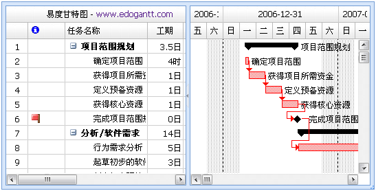

甘特图组件和数据对象
引用CSS和JS
使用EdoGantt是一件简单轻松的事，首先我们在HTML页面内引用CSS和JS：
<!--edo css--> <link href="../../scripts/edo/res/css/edo-all.css" rel="stylesheet" type="text/css" /> <link href="../../scripts/edo/res/product/project/css/project.css" rel="stylesheet"
type="text/css" /> <!--edo js--> <script src="../../scripts/edo/edo.js" type="text/javascript"></script>
注意，请仔细检查css和js的路径是否正确。很多错误都只是CSS或JS路径不对造成的。
创建EdoGantt
创建一个EdoGantt，需要两大对象：
1.Edo.lists.Gantt ：甘特图显示组件。负责界面显示和操作。
2.Edo.data.DataGantt ：甘特图数据组件。负责数据修改。
我们在网页上创建一个web gantt，来说明如何使用这两个对象：
//创建一个Edo.data.DataGantt甘特图数据对象 var dataGantt = new Edo.data.DataGantt(ganttData); Edo.build({ id: 'gantt', type: 'gantt', //甘特图显示组件 width: 700, //宽度 height: 350, //高度 startDate: new Date(2009, 0, 28), //甘特图显示开始日期 finishDate: new Date(2009, 1, 30), //甘特图显示截止日期 data: dataGantt, //将甘特图数据对象,设置给甘特图显示组件 render: document.getElementById('view') });
这里的ganttData数据对象，就是我们上一节教程“甘特图数据结构”中的甘特图基础数据对象，是一个普通的JS Array。
创建的甘特图视图如下：

创建标准甘特图
使用Edo.lists.Gantt创建的甘特图组件，只是一个条形图视图。
一般人们需要的甘特图，是一个左侧树，右侧条形图的视图。
EdoJS提供了一个强大的树形组件:Edo.lists.Tree，来帮助我们实现一个标准的甘特图。
标准甘特图视图如下：

关于如何使用Edo.lists.Tree，超出了本篇教程讲述的范畴，您可以去EdoJS官方网站的教程中心学习了解。
这里有一个标准甘特图的甘特图例子可供参考。
调整甘特图视图日期范围
Edo.lists.Gantt除data属性外，还有两个非常重要的属性：startDate和finishDate。这两个日期属性，用来控制甘特图的日期显示范围，如果任务的日期超出这个日期范围，将不会显示在甘特图界面上。所以，如果想将所有任务显示在甘特图界面上，请将这两个值，设置为所有任务的最小开始日期和最大完成日期。
用户可以在创建甘特图的时候，给startDate和finishDate赋值，也可以在创建甘特图之后，参考如下代码重新设置，便于实时调整甘特图显示日期范围：
gantt.set('startDate', new Date(2009, 0, 28)); gantt.set('finishDate', new Date(2009, 1, 30));
用户也可以在任何时刻重新设置甘特图的数据对象，不断刷新甘特图数据内容。
使用AJAX获取数据
在实际使用中，用户的甘特图数据不会存放在静态页面内，而是请求服务端的一个页面服务，返回项目数据，这就需要使用一个数据交互组件：AJAX。
用户可以使用自己属性的AJAX组件，如果有需要，我们也提供了一个EdoJS AJAX组件，帮助用户更方便进行数据交互操作。
这里有一个使用Ajax加载Json数据的甘特图例子可供参考。
监听事件和数据操作
在“监听事件和数据操作”教程中，您可以学习怎么用EdoGantt来实现自己的项目管理功能逻辑。
自定义甘特图外观
在“自定义显示外观”教程中，您可以学习到如何将EdoGant修改成符合自己项目或产品需要的外观。
相关示例： 基础甘特图 标准甘特图 使用Ajax加载Json数据